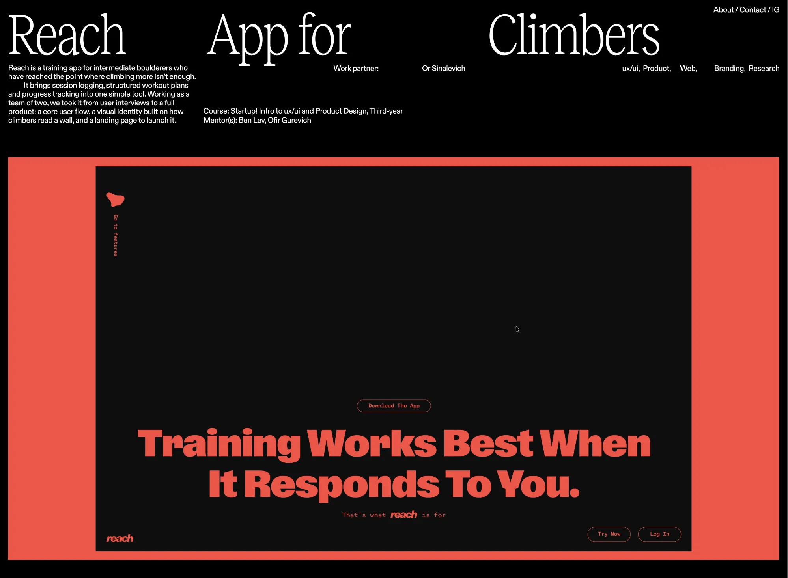
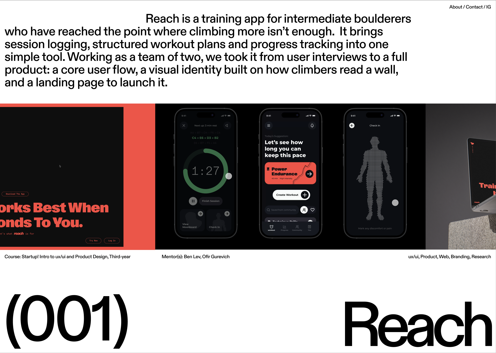
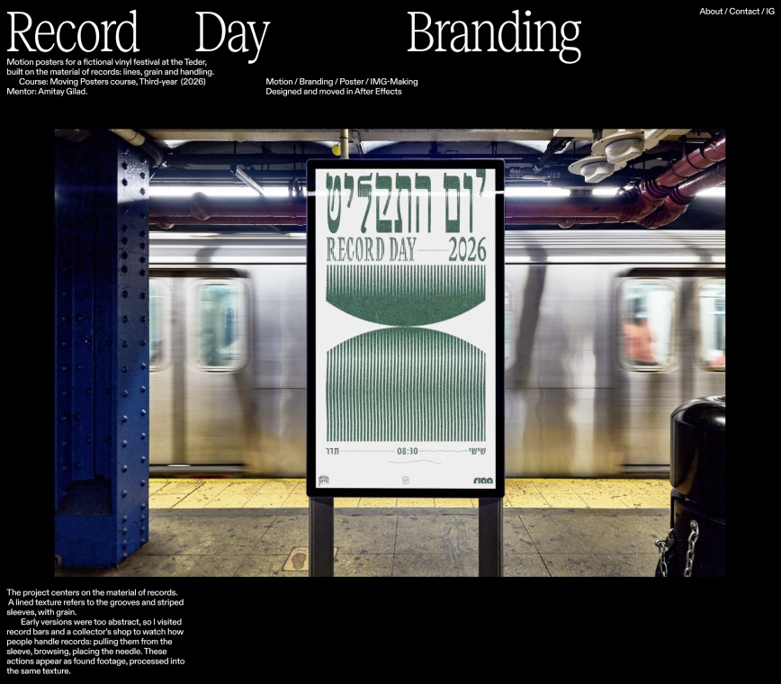
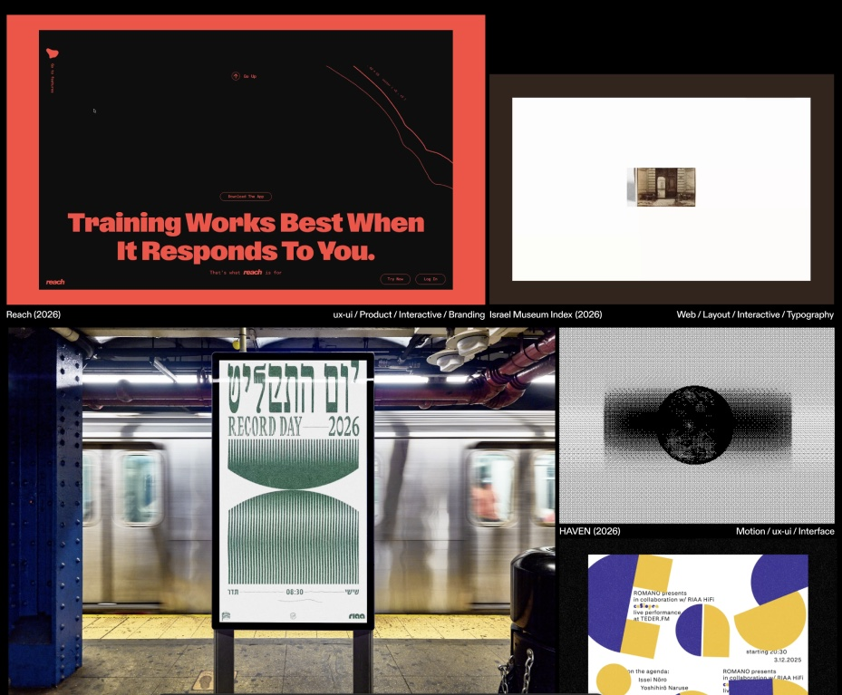
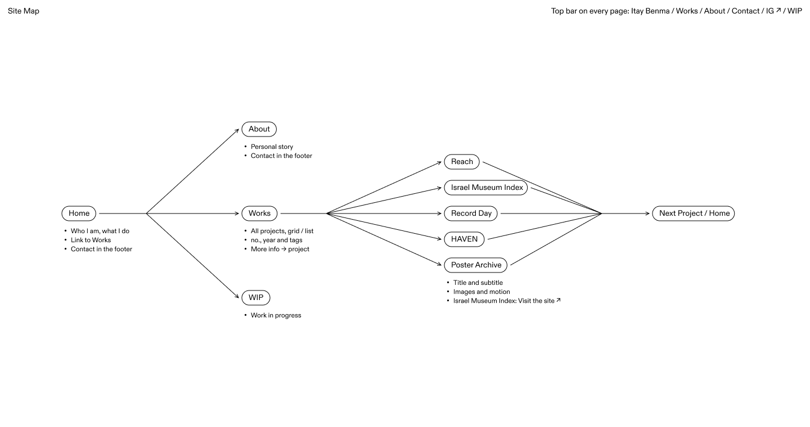

A portfolio in progress, logged as it happens: the drafts, the dead ends and the ones that made it.
Newest first, nothing polished, everything honest. Quite literally, Every change to this site, dated and kept.
-
Meeting no. 1
Starting Point
19.10
2026
I'm Itay, a final-year Visual Communication student at Bezalel. I'm interested in how experimental ideas turn into things that work. This site is for studios, employers and collaborators. Within five seconds, I want them to see my projects, how I work, and the range of what I make.
Chose this direction, felt more like me based on feedback I got
Direction no. 1

Direction no. 2

-
Meeting no. 2
From Identity to Structure
26.10
2026



- Meeting no. 3 System 02.11 2026
-
Meeting no. 4
Figma vs Site
09.11
2026
Figma vs Site
Where the site and Figma part ways, and the motion only the site has. Read it sideways: first the gaps and what was decided for each, then two pieces of motion and why each sits exactly where it does.
The gaps, and what was decided
The rule: Figma wins, unless the thing depends on code (motion, hover, scroll, a browser limit). Every gap from gaps.md ends in one of three: a fix in the code, an update in Figma, or “works”, different on purpose.
The site went back to Figma
Fixed in code
Where Figma Site Decision Home Everything under the bar starts at y 177 Sat about 60px higher Footer moved 105px higher, then the page rebuilt from “Home screen experiments” WIP Rows 52px apart, intro 14px Rows 24px apart, intro 16px Rebuilt from the “WIP” frame Phones New frames: 18px bar, “Instagram” spelled out, numbered works Older phone layout Rebuilt from the frames Israel Museum, phone No “Visit the site” Shown Removed on phones Reach Intro breaks before “personalized” Broke elsewhere Intro box set to Figma’s 404px The site is right
Update in Figma
Where Figma Site Decision Top bar “Multidisciplinary Designer based in TLV” in the middle Removed Decided after the design; the frames still show it WIP in the menu On the phone frames Computers only WIP is built for a computer: sideways rows and drawers More to come soon The After Effects film The globe and the running strip The film read as a project of its own Poster Archive Handmade posters run 15px past the edge, overlapping Inside the margin, 10px apart The frame breaks the page’s own margin Record Day, phone “Indesgin” “Indesign” Typo in the frame Different on purpose
Works
Where Figma Site Decision Every link A static link The line draws from one side to the other Motion; a frame shows the resting state Cursor None A circle: negative over text, a button over a work Hover; see motion, example 2 Project pages A fixed title The title shrinks into the bar while scrolling Scroll; see motion, example 1 Reach, phone Vector board with a noise filter The same board as a WebP The SVG filter crashed iPhone Safari Motion, and why exactly there
Two pieces of motion only the site has, recorded from the live site, then what each does and why it sits where it does.
Example 1 · Project pages, the first 400px of scrolling
The title shrinks into the bar
What
As you scroll into a case study, the big three-word title shrinks in place into a small title at the top, and the description rides up under it. The course, the tags and “Visit the site” are cut off at one line, as if they go under the title, and fade back in on the way up.
Why exactly there
The title is the biggest thing on the page and the first thing you read, but once you're inside the work it would cover it. Shrinking keeps it as a label for where you are instead of throwing it away, and each word stays in its own column, so the page keeps its grid. It happens only over the first 400px, exactly where the title meets the first picture. Phones don't get it: the screen needs the space, and a plain column reads better.
Example 2 · Home, over the works
The cursor becomes the button
What
Over a work, the cursor's circle grows and writes “More info” around itself, in that work's own color (red over Reach, white over the museum), and the line under the work's name and tags draws in from side to side.
Why exactly there
The works are the only things on the home page that open a case study, and the site has no buttons: it's black and white, and color comes only from the work. So the cursor itself becomes the button. The picture stays clean, and color shows up only where a work is. Everywhere else the circle stays small and only flips to its negative over text, so the one place it grows says “this opens”.
-
Meeting no. 5
A system built to hold change
16.11
2026
Stress test
Phones, Safari, long names, parts taken away. When something broke, I fixed it once, in the component or the variable it came from, so every page took the fix.
What broke, and where it was fixed
Fixed in the component or the variable
Where What broke Fixed in The fix Cursor A tap on a phone wrote “More info” around the hidden circle again and again, until Safari ran out of memory and reloaded the site. It came back once more, through a new path The cursor component The circle only listens to a real mouse. Fixed in the one function every caller goes through, so a new path can't reach it again Cursor ring Each browser measured the ring's words differently, and Reach lost its last dot The cursor component The words are measured the same way in every browser Hover line Under long names and letters like g, p, y the line cut through the letters The link-line component, two variables The line sits just under the letters (--line-raise) and leaves a gap where a letter drops into it (--line-gap) Phone cards Tags of different lengths broke into lines differently on each card The card component Every card's tags take the same width, so they break alike Phone margins Figma's phone frames are tighter than the computer's One variable --space-m becomes 12px on phones, and every margin follows Colors Colors were written straight into the rules, so a change meant hunting for them Variables Every color moved to a variable on :root (--color-bg, --color-accent, --color-board-museum…) Project pages On the museum page the course and the tags start on one line but disappeared at different times The shared project-page script One rule: texts that start on the same line are cut at the same line. All five project pages took it Top bar Removing the tagline from the middle The top-bar component Its grid went from three columns to two; all eight pages followed from one line User test
Three people, each shown the home page for five seconds and asked what this site is. Then they used it freely, and I watched where they got stuck.
The five-second test · all three
“A designer who works across several fields”
Where they got stuck, and what I fixed
What I changed
Who What happened What I fixed All three Five seconds on the home page: “a site of a designer who works across several fields” That's the message the home page is built to give, so it stayed Two of three Got stuck on Contact in the footer: not because it was hard to find, but because it was too small, almost invisible Contact in the menu glides down to the footer; Email rolls into the address and a click copies it (“Copied!”), on phones too A friend who isn't a designer Got stuck on the Poster Archive: the explanations over the posters and the order of the page felt strange Took his advice: the explanations are gone, and the page is laid out again so the posters sit right -
Meeting no. 6
Polish & Publish
23.11
2026
The last round of polish
What changed after today's feedback is mostly the home page. I built a system that holds two works to a row, with columns that change from row to row, more air around them, and “More to come soon” at the end. This time I wanted the home page to feel like a gallery.
Where it started · 12.11
The first index
The works as rows: a row opens a crack on hover, and on a click a card fills the screen while the others squash.


The Work in Progress...
Of this portfolio